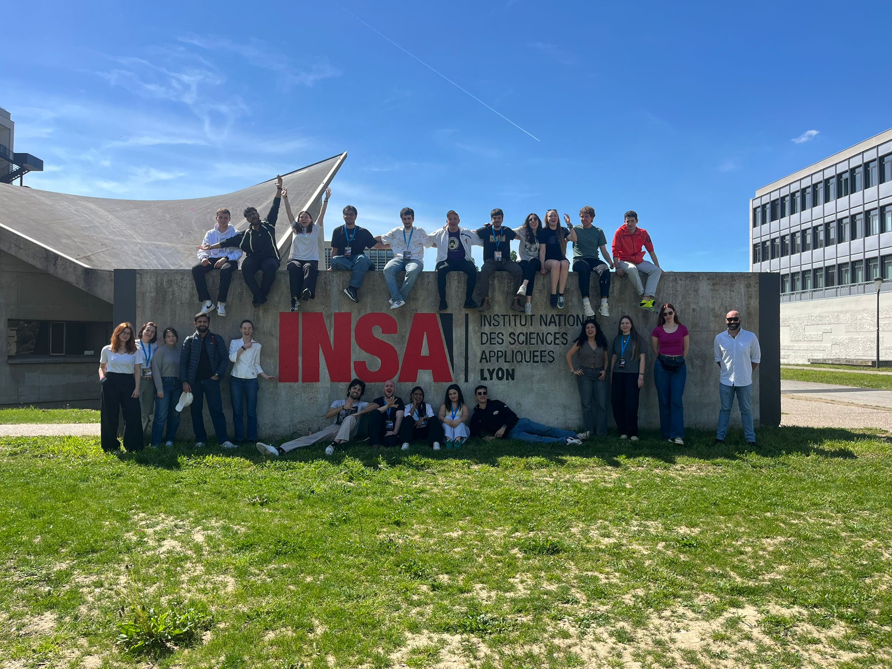
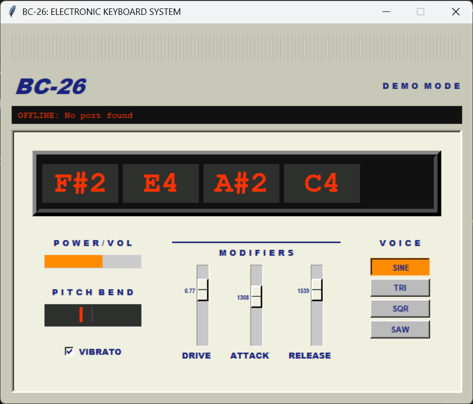

Sintetizador MIDI Polifónico para Teensy
- Periodo
- 11–19 abril 2026
BEST Course, INSA Lyon (Francia) - Herramienta(s) que usé
- C++ (Teensy Audio Library)
Arduino
Python (Tkinter, pySerial) - Tamaño del equipo
- 2 personas
(pareja internacional formada en el curso) - Rol(es)
- Desarrollador DSP
Desarrollador de la app de control

El proyecto

Este proyecto lo hice durante "Fast and Fourier-rous: Master the speed of sound", un BEST Course de 9 días en INSA Lyon (Francia) sobre procesado de audio en tiempo real y sistemas embebidos. BEST (Board of European Students of Technology) es una organización internacional sin ánimo de lucro que organiza cursos técnicos intensivos por toda Europa; a este se llega por selección (carta de motivación) y reúne a estudiantes de ingeniería de decenas de países distintos, conviviendo en el campus durante todo el curso. Formé pareja con un compañero de otro país para el proyecto final: un sintetizador MIDI polifónico (4 voces) sobre una placa Teensy, con síntesis generada por código —sin samples— y una app de control en Python, presentado en una demo en vivo el último día junto al resto de equipos.
El sistema
Motor de síntesis y firmware (C++)
Escribí MyDsp, una clase que extiende AudioStream de la
Teensy Audio Library y genera cada muestra de audio a mano: cuatro formas de onda,
envolvente de ataque/release, vibrato, pitch bend y distorsión con clipping. La
batería tampoco usa samples: cada instrumento (kick, snare, hi-hat, tom, cowbell) es
una combinación de osciladores y ruido con envolventes exponenciales distintas. El
firmware asigna las 4 voces a las notas MIDI entrantes, lee los potenciómetros de
volumen y pitch bend, y expone un pequeño protocolo por serial para que una app
externa dispare percusión y cambie parámetros en tiempo real.

Aplicación de control (Python)
Mi compañero construyó una app de escritorio en Tkinter que se conecta al Teensy por
serial, detectando el puerto automáticamente. Muestra en una pantalla estilo LCD las
notas activas de las 4 voces y da control en vivo sobre forma de onda, distorsión,
ataque/release, pads de batería y un metrónomo con varios modos, corriendo en su
propio hilo para no bloquear la lectura del puerto serial.
Estado actual
Funcional: síntesis polifónica, batería, metrónomo, control por hardware y app de Python en tiempo real. Quedan pendientes, según lo dejamos documentado, la visualización de notas con pitch shifting y un comportamiento más fino de ataque/release.
Lo que aprendí
- Programación de audio en tiempo real sobre un microcontrolador, generando cada muestra dentro del presupuesto de tiempo de un bloque de audio.
- Diseño de síntesis de percusión por código (sin samples), combinando osciladores y ruido con envolventes distintas por instrumento.
- Trabajo en equipo bajo presión de tiempo (proyecto completo en pocos días) con un compañero de otro país, en inglés.
- Experiencia en un entorno internacional: selección por carta de motivación, convivencia con estudiantes de ingeniería de toda Europa y presentación de resultados en una demo en vivo.